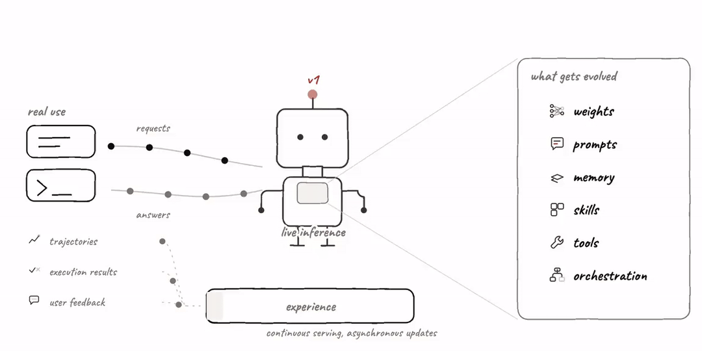
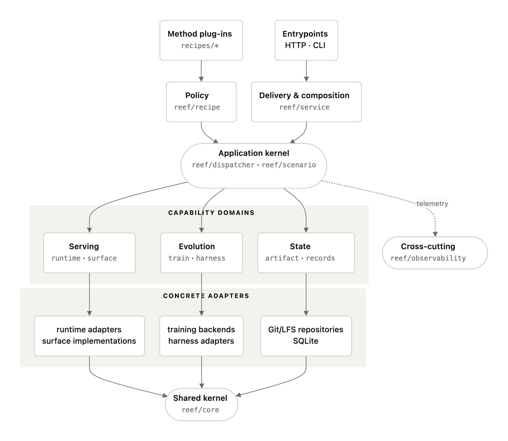
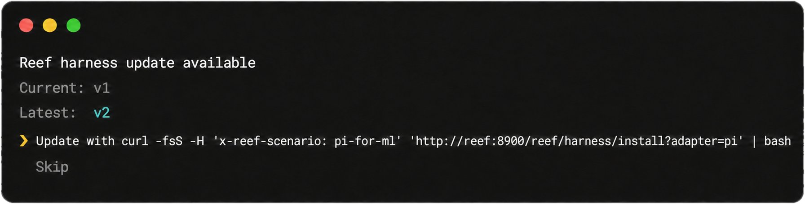
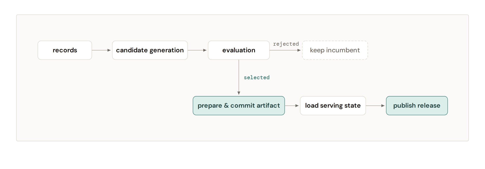
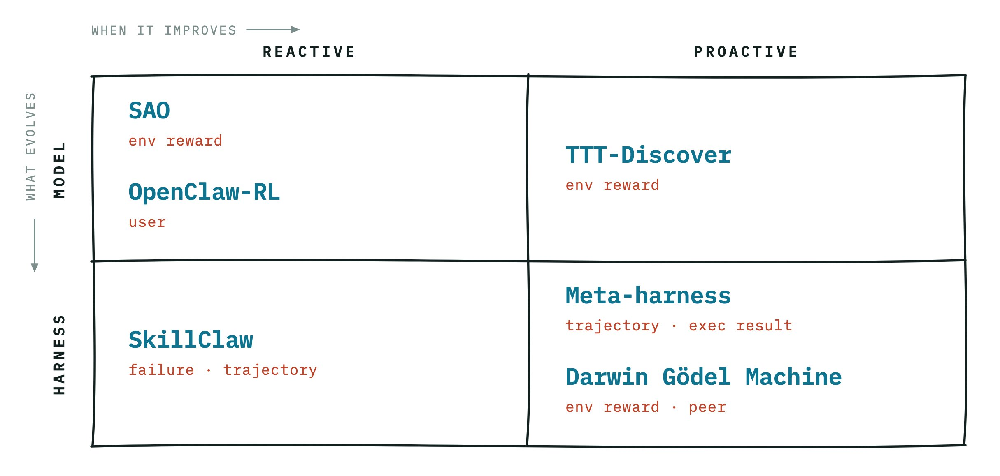
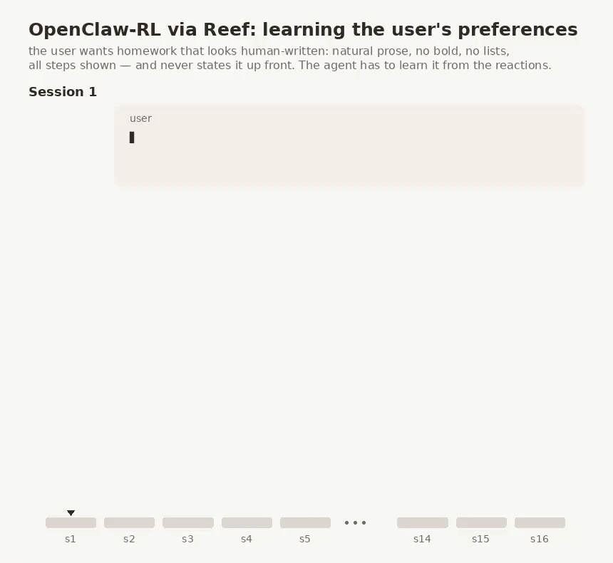
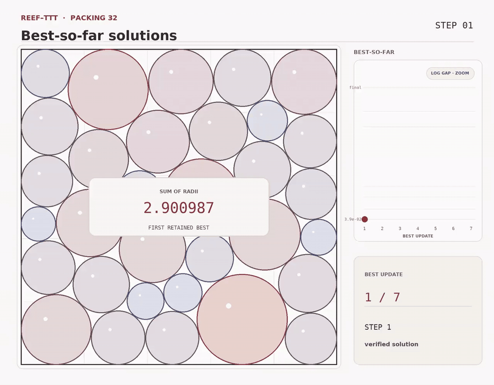

| 标题 | Reef 开源：把推理服务器变成持续自我改进的 Agent（有状态推理基础设施） |
| 正文 | 推理服务器不必只做推理。Reef把模型与harness的演化接进线上服务：调用与反馈沉淀为结构化经验，学习配方据此产出新版本，再热更新回正在服务的实例。 |
| 小节 | 开源Reef：让Agent从自身经验里持续进化 |
| 正文 | 在围绕RSI的热潮完全兑现之前，我们先把Reef开源。它面向一个更宽泛的问题：让Agent（模型 + harness）能够从自身经验中持续进化。 |
| 正文 | 目标是让开源社区更容易试验持续自我改进，并直接拿到生产级的基础设施。这里把持续自我改进当作更宽泛、更实用的框架，RSI则是同一理念中更完全递归的那一种形式。 |
| 小节 | 为什么持续自我改进需要新基础设施 |
| 正文 | 大多数LLM（大语言模型）基础设施假设一个相对简单的生命周期：训练模型、评估、部署，然后用于推理。对于持续自我改进的Agent，我们认为这一设置背后的两个假设开始失效。 |
| 图 |  fig01.gif |
| 图注 | 图1：从训练、评估、部署、推理的顺序流水线，走向持续演进的循环 |
| 正文 | 首先，推理不再是流程的终点。Agent在工作过程中会产生有价值的经验，包括轨迹、执行结果、用户反馈以及其他可以推动未来改进的信号。推理时发生的事情不再是我们简单提供后丢弃的内容，它本身成为学习过程的一部分。 |
| 正文 | 其次，模型不再是唯一进化的部分。Agent不仅仅是模型，持续自我改进不应局限于模型权重。提示词、记忆、技能、工具和编排逻辑都可能从经验中改进。更强的模型扩展了Agent的能力，而更好的框架则有助于更有效地激发这些能力，并在复杂任务中更可靠地运用它们。 |
| 正文 | 这些变化共同将原本主要是顺序流程的体系转变为持续进化循环。Agent进行交互、产生经验、改进自身不同部分、评估这些改变是否值得保留，然后以系统新版本的身份重新投入服务。 |
| 正文 | 这也是我们不将Reef仅视为训练基础设施的原因。训练只是循环的一部分。我们认为，持续自我改进的基础设施必须从实时推理出发，并支持整个Agent（智能体）的演进。 |
| 图 | fig02.gif |
| 图注 | 图2：线上服务与反馈回流构成的经验闭环 |
| 小节 | 持续自我改进的基础设施要掌控三件事 |
| 正文 | 持续自我改进的基础设施需要端到端地掌控三方面：经验、Agent（智能体）与更新。这意味着（1）从实时流量中学习，（2）同时更新模型与harness，（3）恰当地评估、版本管理并控制更新的发布方式。 |
| 图 |  fig03.jpg |
| 图注 | 图3：Reef架构 |
| 小节 | 掌控经验：学习必须建立在实时服务之上 |
| 正文 | 推理与训练历来相互解耦。部分RL基础设施（如Slime、veRL）集成了用于生成数据的推理引擎，但这些系统面向模型训练而非模型服务。我们认为，持续自我改进的基础设施首先应是推理基础设施，并围绕实时推理构建其训练能力：系统服务真实应用，收集测试时经验，并让学习方案持续消费这些经验。这一理念促使我们重新思考诸多设计选择，包… |
| 正文 | 推理是Reef的原生能力。Reef提供标准推理端点，便于集成到现有应用中，并将其转变为自我演进系统。 |
| 正文 | # client = xxx # initialize httpx client to Reef's serving endpoint# Standard inferen… |
| 正文 | # Attach feedback to the corresponding inference recordclient.post( "/reef/report", json={&… |
| 小节 | 掌控整个Agent：模型与harness都要演化 |
| 正文 | 一个能够交付端到端结果的AI Agent（智能体）不仅包含模型，还包含harness。模型提供完成任务所需的基础能力，而harness通过管理工具、上下文、记忆、反馈和编排，确保在复杂、长时程轨迹上的可靠执行。两者紧密耦合：harness决定模型能力如何被激发、落地和运用，而模型决定harness能可靠支持何种执行形式… |
| 正文 | Reef支持对模型和harness的双重更新。 |
| 正文 | 在harness侧，Reef使用Cordis作为“训练后端”。harness演化配方通常分析Agent（智能体）轨迹和反馈，然后提出对harness的修改。此过程完全在Reef内部进行，每个演化后的harness版本都会作为可安装更新发布给用户（假设Reef运行在localhost:8900）： |
| 正文 | curl -fsS -H "Authorization: Bearer $REEF_TOKEN" \ 'http://localhost:8900/reef/harness/install?adapter=pi… |
| 图 |  fig04.jpg |
| 图注 | 图4：harness按演化配方更新后，用户再次打开时看到的新版本 |
| 正文 | 在模型侧，学习配方消费Reef记录以更新模型权重。训练与实时服务异步运行，使用分布式训练后端（目前改编自Slime），并产生候选权重更新，如检查点或LoRA适配器。 |
| 正文 | 一旦候选通过评估并获准部署，Reef将其发布为场景模型工件的新版本，并使用基于NCCL的权重同步热更新服务引擎，无需重启服务。 |
| 小节 | 掌控更新：演化后的发布要经过评估与版本管理 |
| 正文 | 持续演进的智能体可能面临服务质量下降，尤其是当演进不保证带来性能提升时。因此，每个演进候选在发布前都应经过评估。Reef控制演进候选是否被允许替换当前服务某场景的工件。若候选被拒绝，服务保持不变；否则，Reef将其发布为新的、可审计的版本。 |
| 正文 | Reef可演进的任何内容，比如模型检查点、LoRA适配器、harness树或路由策略，都表示为受版本控制器管理的工件。Reef采用Git LFS管理这些工件，尤其是模型权重这类占用大量磁盘空间的工件。发布路径如下： |
| 图 |  fig05.jpg |
| 图注 | 图5：每个场景一条只追加的发布链，发布头用compare-and-swap推进 |
| 正文 | 每个场景具有仅追加的发布链。Reef使用比较并交换推进场景的发布头，因此过时的发布者无法覆盖较新的发布。发布管道使Reef能高效追踪持续版本变更及发布流程。 |
| 小节 | Reef中的持续自我改进方法 |
| 正文 | 上述基础设施为持续自我改进提供了通用抽象。智能体实际改进逻辑通过模块化学习配方实现。 |
| 正文 | 我们已看到将测试时生成的信号转化为更优智能体的方法日益增多：在线强化学习、测试时训练、技能演进、harness演进、自我对弈等。尽管名称与机制各异，它们遵循相同基本模式：测试时生成的信号被转化为对生成下一次交互系统的更新。 |
| 正文 | 这些配方主要沿三个维度区分： |
| 正文 | · 学习信号：何种形式的信号驱动改进，其来源为何？ |
| 正文 | · 经验获取：学习经验是如何产生的？是由智能体主动寻求，还是由外部任务或交互被动生成？ |
| 正文 | · 演化目标：实际改变的是什么：模型、harness，还是两者兼有？ |
| 图 |  fig06.jpg |
| 图注 | 图6：Reef已支持或即将支持的learning recipe |
| 小节 | 用learning recipe表达不同方法 |
| 正文 | Reef的设计使得这些方法大多可以通过同一基础设施之上的不同学习配方来表达。使用配方很简单：选择一个配方，并在启动Reef服务时进行配置。 |
| 正文 | 在serve.yaml里插入一个演化配方： |
| 正文 | # serve.yamlreef: recipe: recipes.sao.recipe:SAORecipe # Plug in an evolution recipe b… |
| 正文 | reef serve -c recipes/sao/examples/sao/serve.yaml 两条路线截然不同的示例 下面，我们展示两个示例，OpenClaw-RL和TTT-Discover，它们遵循截然不同的演化策略，但都可以在Reef中实现。 |
| 小节 | 两条路线截然不同的示例 |
| 图 |  fig07.gif |
| 图注 | 图7：OpenClaw-RL在Reef中的集成演示。用户与一个模型被Reef异步持续演化的Agent交互，整个过程不打断用户；随着轮次累积，Agent逐渐学会正确理解用户偏好，并给出令人满意的回答。 |
| 正文 | 两个示例对应两条完全不同的演化路线：一个在真实交互中持续更新模型，另一个在求解过程里反复搜索并保留更优解。 |
| 图 |  fig08.gif |
| 图注 | 图8：TTT对Packing 32问题的迭代改进演示。随着优化推进，越来越有效的解被发现并保留下来，装箱分数逐步提高。 |
| 小节 | 结论 |
| 正文 | Reef是我们将持续自我改进这一广泛理念转化为具体系统问题的尝试。通过开源Reef，我们希望使这一问题更易于研究，并为社区提供一个实用基础，以构建不仅提供服务，而且能从经验中持续学习和演化的智能体。 |
| 正文 | 我们邀请您试用Reef，构建自己的学习配方，并将其与您的智能体集成。请访问https://github.com/Human-Agent-Society/reef探索代码、文档和示例配方。如果您觉得Reef有用，欢迎在仓库中给我们一个star。如果您想与我们共同构建或更广泛地讨论持续自我改进，欢迎加入我们的Discord… |
| 正文 | 我们采用持续自我改进（continual self-improvement）作为比RSI更宽泛且更实用的框架。它涵盖那些无需RSI通常所需的完全闭环即可从经验中反复改进的系统：在RSI里，AI自身参与构建和改进生成其下一版本的系统。Reef正是针对这一更宽泛的问题而设计，同时为更递归形式的自我改进在其之上涌现留出空间。 |
| 正文 | 参考：https://x.com/ao_qu18465/status/2094867930081337730 |